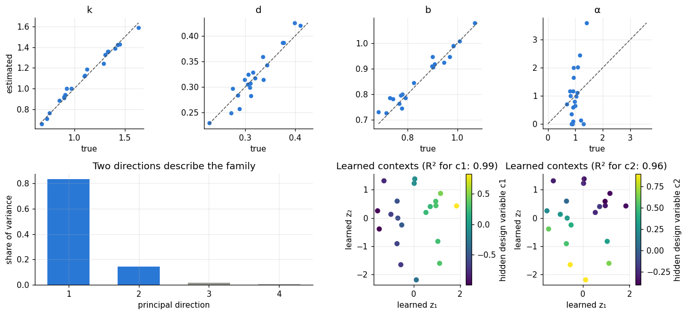

import numpy as np
import matplotlib.pyplot as plt
from scipy.optimize import least_squares
import dynutils
from dynutils import sample_system, simulate, multisine, predict, fit_from_scratch, LOW
dynutils.set_style()
rng = np.random.default_rng(dynutils.SEED)
COLOR, NAMES = dynutils.COLOR, dynutils.NAMESclass Family:
# Pretrained low-dimensional model of a family of systems.
def fit(self, fits, data, rank=2, whiten=True):
# fits: list of (eta_hat, covariance) from fit_from_scratch(..., return_cov=True)
self.eta_hat = np.array([eta for eta, _ in fits])
self.sigma = np.sqrt(np.mean([np.mean((predict(e, u) - y) ** 2)
for e, (y, u) in zip(self.eta_hat, data)]))
self.mean = self.eta_hat.mean(axis=0)
self.scale = (np.sqrt(np.mean([np.diag(cov) for _, cov in fits], axis=0))
if whiten else np.ones(4))
centred = (self.eta_hat - self.mean) / self.scale
_, sv, vt = np.linalg.svd(centred, full_matrices=False)
var = sv**2 / (len(centred) - 1)
self.explained = var / var.sum()
self.U = self.scale[:, None] * vt[:rank].T * np.sqrt(var[:rank])
self.z_train = centred @ vt[:rank].T / np.sqrt(var[:rank])
return self
def decode(self, z):
return np.clip(self.mean + np.asarray(z) @ self.U.T, LOW, dynutils.HIGH)
def project(self, eta):
# Best context for known coefficients, in the whitened metric (used only for evaluation).
return np.linalg.lstsq(self.U / self.scale[:, None], (eta - self.mean) / self.scale, rcond=None)[0]
def r_squared(Z, C):
# Share of the variance of the hidden variables C explained by an affine function of Z.
A = np.c_[Z, np.ones(len(Z))]
residual = C - A @ np.linalg.lstsq(A, C, rcond=None)[0]
return 1 - (residual**2).sum(axis=0) / ((C - C.mean(axis=0)) ** 2).sum(axis=0)
train_systems = [sample_system(rng) for _ in range(20)]
train_data = []
for s in train_systems:
u = multisine(800, rng, n=6)
train_data.append((simulate(s, u, rng)[1], u))
train_fits = [fit_from_scratch(y, u, return_cov=True) for y, u in train_data]
family = Family().fit(train_fits, train_data)
naive = Family().fit(train_fits, train_data, whiten=False)
true_train = np.array([s["eta"] for s in train_systems])
hidden = np.array([s["context"] for s in train_systems])
print("Estimation std per coefficient (k, d, b, α):", np.round(family.scale, 4))
print("Variance explained by each principal direction:", np.round(family.explained, 3))
print(f"Estimated residual noise level sigma = {family.sigma:.4f} (sensor noise alone: 0.01)")
print()
print("How well do the learned contexts explain the hidden design variables (R², 1 = perfectly)?")
for name, fam in (("plain PCA", naive), ("noise-whitened PCA", family)):
r2 = r_squared(fam.z_train, hidden)
print(f" {name:>18s}: c1 {r2[0]:.2f} c2 {r2[1]:.2f}")Estimation std per coefficient (k, d, b, α): [0.0107 0.0048 0.008 0.2976]
Variance explained by each principal direction: [0.832 0.146 0.018 0.004]
Estimated residual noise level sigma = 0.0190 (sensor noise alone: 0.01)
How well do the learned contexts explain the hidden design variables (R², 1 = perfectly)?
plain PCA: c1 0.98 c2 0.22
noise-whitened PCA: c1 0.99 c2 0.96
3. What the learned family looks like
fig = plt.figure(figsize=(12, 5.6))
grid = fig.add_gridspec(2, 4)
for j in range(4):
ax = fig.add_subplot(grid[0, j])
ax.scatter(true_train[:, j], family.eta_hat[:, j], s=18, color=COLOR["context"])
lim = [min(true_train[:, j].min(), family.eta_hat[:, j].min()),
max(true_train[:, j].max(), family.eta_hat[:, j].max())]
ax.plot(lim, lim, "--", color=COLOR["reference"], lw=1)
ax.set(title=NAMES[j], xlabel="true", ylabel="estimated" if j == 0 else None)
ax = fig.add_subplot(grid[1, :2])
ax.bar(np.arange(1, 5), family.explained, color=[COLOR["context"]] * 2 + [COLOR["none"]] * 2, width=0.6)
ax.set(xticks=range(1, 5), xlabel="principal direction", ylabel="share of variance",
title="Two directions describe the family")
r2 = r_squared(family.z_train, hidden)
for j in range(2):
ax = fig.add_subplot(grid[1, 2 + j])
sc = ax.scatter(*family.z_train.T, c=hidden[:, j], cmap="viridis", s=30)
fig.colorbar(sc, ax=ax, label=f"hidden design variable c{j+1}")
ax.set(xlabel="learned z₁", ylabel="learned z₂", title=f"Learned contexts (R² for c{j+1}: {r2[j]:.2f})")
plt.tight_layout(); plt.show()
- Top row. Stiffness, damping and gain are identified well from long recordings; \alpha is only roughly determined (as chapter 02 predicted). Pretraining inherits these imperfections.
- Bottom left. Two directions explain almost all of the (noise-weighted) variation. The learner has discovered, from data alone, that the family is essentially two-dimensional.
- Bottom right. The learned coordinates z encode both hidden design variables smoothly. They are a rotated and rescaled version of c: PCA cannot know the "names" of the hidden variables, and it does not need to.
- The printout above shows why the noise weighting matters. Plain PCA recovers the first design variable but largely misses the second, because it spends a direction on the scatter of the poorly identified \alpha. What a model can learn from a population is limited by what can be identified in each of its members.
This is the miniature version of a foundation model. A large model would replace the fixed physics equation by a neural state-space model and PCA by a learned encoder. The division of labour stays the same: a shared backbone plus a small system-specific context.
From here on, every chapter needs this pretrained family. dynutils.build_family(rng) rebuilds it
with exactly the code above, so calling it with a freshly-seeded
rng = np.random.default_rng(dynutils.SEED) reproduces this same family, deterministically, at the
top of every later chapter.
Exercises
Exercise 1: How many training systems does the family need?
Refit the family with only 5 and 10 training systems (reuse train_systems[:5] and
train_systems[:10] and their corresponding train_data/train_fits) and compare the variance
explained by the first two directions and the R² against the hidden design variables.
Solution
for n in (5, 10, 20):
fam_n = Family().fit(train_fits[:n], train_data[:n])
r2_n = r_squared(fam_n.z_train, hidden[:n])
print(f"n={n:>2d}: variance explained {fam_n.explained[:2].sum():.2f}, R² {r2_n[0]:.2f} {r2_n[1]:.2f}")
With only 5 systems the two-dimensional structure is already visible, but the learned axes are noisier and their R² against the true design variables is markedly lower; 20 systems is enough for the family to stabilise, which is why that is what the rest of the course reuses.
Exercise 2: How much does whitening change the backbone itself?
Compare family.mean and naive.mean (both are the plain average of the 20 estimates, so they
should match) against family.U and naive.U. Which one points closer to the true mixing matrix
_M used by the simulator (up to rotation and scale, so compare the subspaces by looking at how
well each explains the hidden context, i.e. reuse the R² already printed above)?
Solution
Whitened PCA's R² (about 0.98 and 0.96 for c1 and c2) is far higher than plain PCA's (about 0.96 and
0.35), even though both share the same mean. The directions U differ because whitening
reweights each coefficient before finding them; only the whitened ones recover a subspace close to
the true M @ c, since plain PCA's second direction is dominated by α's estimation noise rather
than genuine variation.